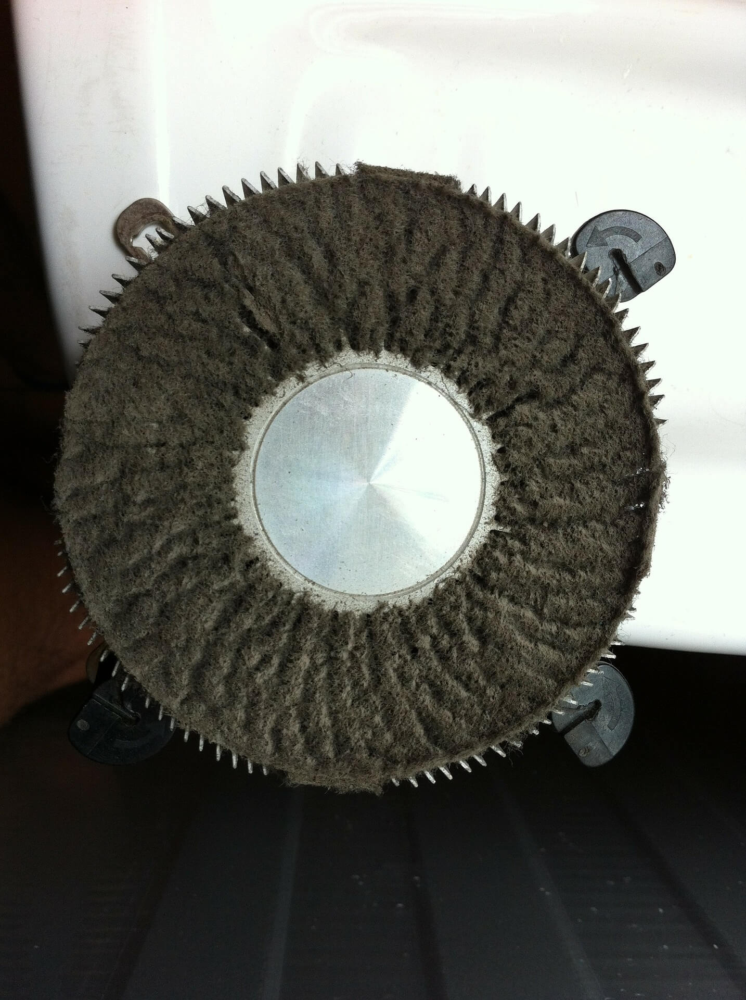

It is essential to look after and clean the inside of a desktop. If a desktop doesn't have dust filters in front of the intake fans, dust builds up on the CPU and GPU coolers, like the CPU cooler shown above. An effecient and safe way of removing this dust is compressed air, which can be bought in cans cheaply from places like Mitre 10 and Placemakers. And although dust filters restrict the airflow, it means parts won't be filled with dust.
BACK TO HOMEPAGE